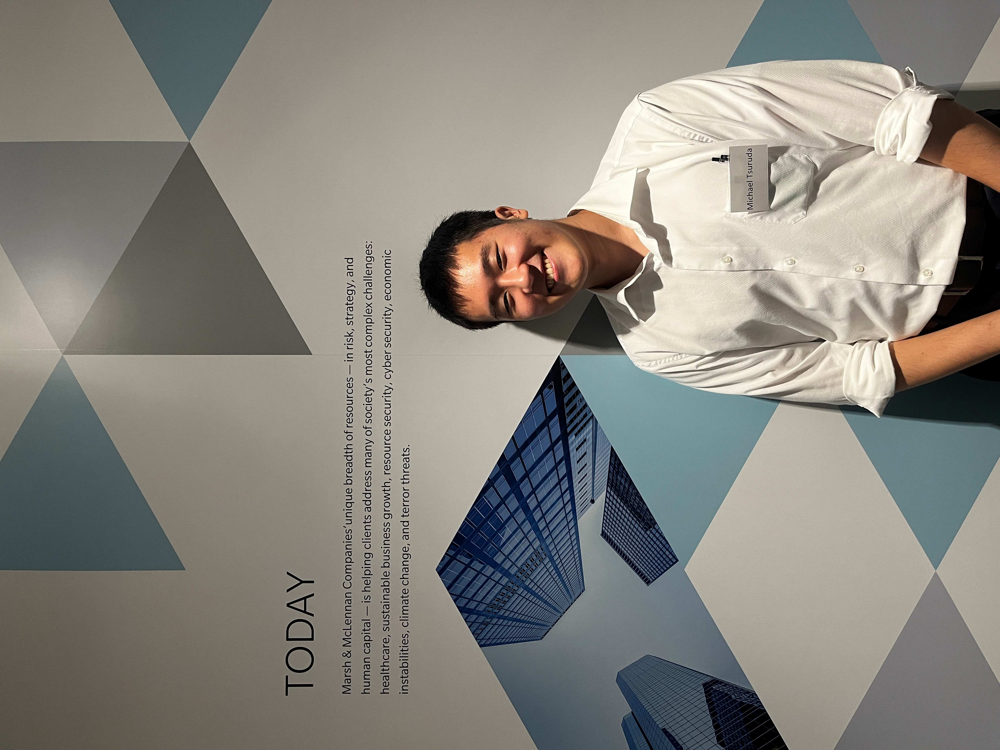
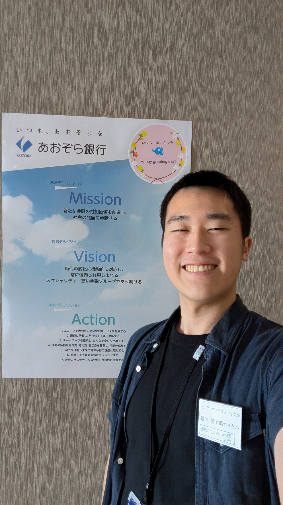
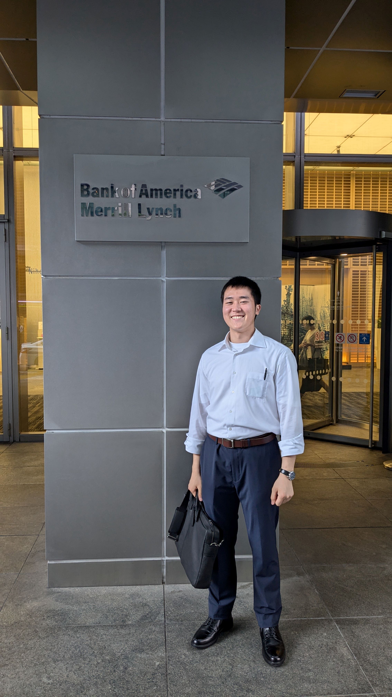
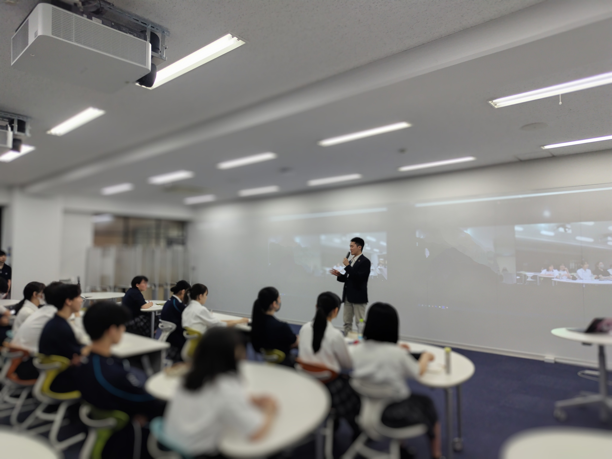
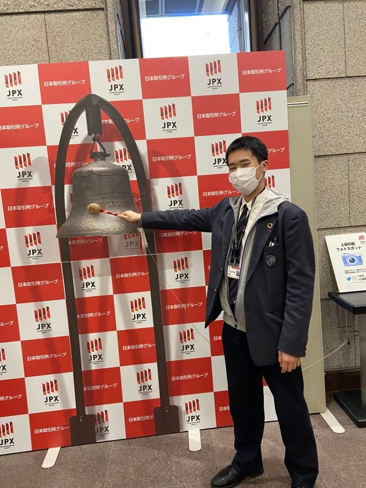

Table of Contents:
- 2024/07: Attended a networking/workship event at Oliver Whyamn (Marsh & McLennan) Japan Office
- 2024/07: Attended a networking/workshi Aozora Bank
- 2024/06: Attended a networking session at Bank of America
- 2024/06: Guest Speaker at Musasino University Chiyoda High School
- 2024/06: Attended a networking event at PwC
- 2021/12: Visiting Japan Exchange Gruop (JPX)
-
2024 Jul.
⠀ ⠀ ⠀
Oliver Whyamn (Marsh & McLennan) Japan Office
Tokyo, Japan
Joined a networking session for Oliver Wyman, also attended a workship session experiencing a case work study session.
-
2024 Jul.
⠀ ⠀ ⠀
Aozora Bank Head Office
Tokyo, Japan
Joined a networking session and a workship for the retail and corporate finance department.
-
2024 Jul.
⠀ ⠀ ⠀
Bank of America Japan Office
Tokyo, Japan
Joined a networking session for the Global Operation and the Global Technology department. Gained a deep understaing of BofA by interacting with current employees.
-
2024 Jun.
Guest Speaker
Musasino University Chiyoda High School
Tokyo, Japan

Invited speaker at my former high school, where I shared insights from my academic journey at Brandeis University. Also presented strategies for balancing coursework while navigating the complex college application process in both Japan and the United States.
-
2024 Jun.
⠀ ⠀ ⠀

PwC Japan
Tokyo, Japan
Joined two exclusive networking session for overseas university students hosted at PwC Japan Office. Fostered the understanding of PwC by interacting with active employees.
-
2021 Dec.
⠀ ⠀ ⠀
JPX (Japan Stock Exchange) Head Office
Tokyo, Japan
Visited JPX, the oldest and the major stock change market in Japan to gain understanding of the market moderator and how JPX contributes to maintain a just, competitive market.